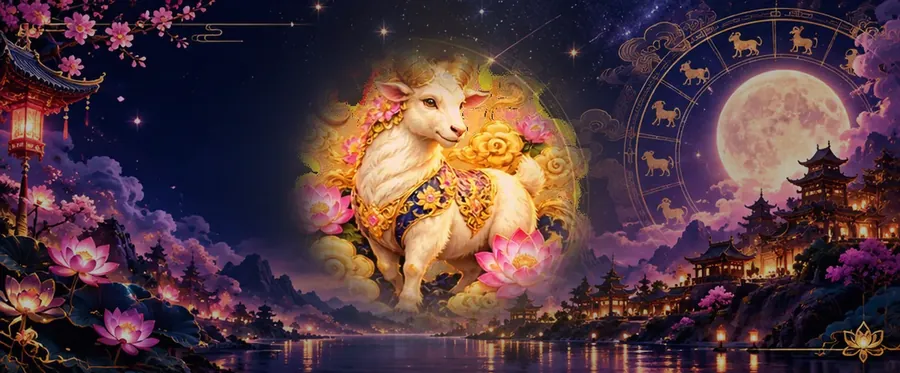

2027 Horoscope
Goat Horoscope 2027: What the Fire Goat Year Means for the Goat
2027 is the Goat's own year, called ben ming nian. Tradition treats your own animal's year with some caution, but reads it as a custom, not a curse. Here is how the Goat is read in 2027, what your birth element adds, and the months to watch.

The Goat and the Goat year
China Highlights explains the belief that people in their own zodiac year offend Tai Sui, and describes customs such as wearing red, ideally a gift from family or friends, and jade. Read them as culture, not as a warning.
Being in your own year also puts the Goat's character center stage. A practical reading is to build on the Goat's creativity and care, and to ask for support rather than carrying everything alone. Our Goat, Sheep or Ram guide explains the sign's names and dates.
2027 is a Ding-wei year, according to the Hong Kong Observatory: Ding is a Fire stem and Wei is the Goat, so it is the year of the Fire Goat, from 6 February 2027 to 25 January 2028. These are cultural readings, not forecasts: no evidence shows a year's animal decides anyone's luck. Use them as a prompt to think about your own plans.
Your element in 2027: every Goat year since 1943
Each Goat year has its own element, set by the last digit of the year. In 2027 that element meets the year's Fire, and the five-element cycles describe how:
| Born | Year starts | Element | In 2027 | Your element and the year's Fire |
|---|---|---|---|---|
| 1943 | 5 February 1943 | Water Goat | turns 84 | Water dampens Fire: your element works on the year |
| 1955 | 24 January 1955 | Wood Goat | turns 72 | Wood feeds Fire: your element feeds the year |
| 1967 | 9 February 1967 | Fire Goat | turns 60 | Fire meets Fire: the same element as the year |
| 1979 | 28 January 1979 | Earth Goat | turns 48 | Fire produces Earth: the year feeds your element |
| 1991 | 15 February 1991 | Metal Goat | turns 36 | Fire melts (or refines) Metal: the year works on your element |
| 2003 | 1 February 2003 | Water Goat | turns 24 | Water dampens Fire: your element works on the year |
| 2015 | 19 February 2015 | Wood Goat | turns 12 | Wood feeds Fire: your element feeds the year |
| 2027 | 6 February 2027 | Fire Goat | born in 2027 | Fire meets Fire: the same element as the year |
In the five-element cycles, as Wikipedia sets them out, Wood feeds Fire, Fire produces Earth, Fire melts (or refines) Metal, and Water dampens (or regulates) Fire. These links are a traditional way of describing how each element meets the year, not a prediction.
Born in January or early February? The zodiac year starts at Chinese New Year, so check the start date in the table; if you were born before it, you belong to the sign before the Goat. Our born in January guide and the zodiac checker explain.
Love and relationships for the Goat
The Goat's natural matches in our guide are the Rabbit and the Pig, its triangle partners, and the Horse. Goats are said to thrive in secure, supportive relationships, and their own year is a good time to lean on the people who provide that. The Ox, the Goat's opposite, is the pairing tradition marks as the hardest.
Work and money for the Goat
Our guide links the Goat with art, design, counseling and nonprofit work. In its own year, the Goat's watch-out is indecision and taking on too much for others; choosing a few things and saying no to the rest leaves room for the creative work Goats do best. With money, a simple budget helps when generosity runs ahead of the plan.
Months to watch in 2027
Each zodiac year is also divided into twelve zodiac months. Each one starts at a solar term rather than at the new moon, beginning with the Tiger month at Spring Commences (Lichun) on 4 February 2027. The dates below are the 2027 solar terms, calculated for Beijing time; they can differ by a day in other time zones.
| Month | 2027 dates | For the Goat |
|---|---|---|
| Tiger | 4 Feb – 5 Mar | |
| Rabbit | 6 Mar – 4 Apr | Triangle month: traditionally smoother |
| Dragon | 5 Apr – 5 May | |
| Snake | 6 May – 5 Jun | |
| Horse | 6 Jun – 6 Jul | |
| Goat | 7 Jul – 7 Aug | Your own month |
| Monkey | 8 Aug – 7 Sep | |
| Rooster | 8 Sep – 7 Oct | |
| Dog | 8 Oct – 6 Nov | |
| Pig | 7 Nov – 6 Dec | Triangle month: traditionally smoother |
| Rat | 7 Dec – 5 Jan 2028 | |
| Ox | 6 Jan 2028 – 3 Feb 2028 | Clash month: take extra care |
Read with the same rules as the year, the months of your triangle partners, the Rabbit (6 Mar – 4 Apr) and the Pig (7 Nov – 6 Dec), are traditionally the smoother ones for the Goat, and the month of your opposite sign, the Ox (6 Jan 2028 – 3 Feb 2028), is the one to take extra care in. The Goat month (7 July – 7 August) is your own month inside your own year.
Lucky colors, numbers and days for the Goat
In our Goat guide, the Goat's lucky colors are green, red, purple, its lucky numbers are 2, 7, and its lucky days are Friday and Sunday. For the full profile, read the Year of the Goat guide; for every sign in 2027, see the 2027 predictions.
Frequently asked questions
Is 2027 a good year for the Goat?
It is the Goat's own year, ben ming nian. Tradition treats it with some caution and suggests customs such as wearing red, but reads it as culture, not misfortune.
What is the Goat's clash month in 2027?
The Ox month, from 6 Jan 2028 to 3 Feb 2028. The Ox is the Goat's opposite sign, and tradition marks its month as the one to take extra care in.
What element is my Goat year?
It depends on the year you were born: 1943 is a Water Goat; 1955 is a Wood Goat; 1967 is a Fire Goat; 1979 is an Earth Goat; 1991 is a Metal Goat; 2003 is a Water Goat; 2015 is a Wood Goat. 2027 is a Fire Goat year.
What are the Goat's lucky colors and numbers?
In our Goat guide: colors green, red, purple; numbers 2, 7; days Friday and Sunday.
Sources and further reading
- Hong Kong Observatory: Gregorian-Lunar Calendar Conversion Table of 2027 — 6 February 2027 as the first day of the Ding-wei year of the Goat, and Spring Commences (Lichun) on 4 February 2027.
- Wikipedia: “Wuxing (Chinese philosophy)” — the generating and overcoming cycles of the five elements, Ding as a Fire stem, and the element of each year by its last digit.
- Wikipedia: “Solar term” — the twelve zodiac months, from the Tiger month at Lichun to the Ox month at Xiaohan, each starting at a jie solar term.
- Chinese Idioms: “Chinese Zodiac Compatibility: The Trines, the Clashes, and Your Best Match” (15 July 2026) — the four triangles of compatible signs and the six clashing pairs.
- China Highlights: “Ben Ming Nian — Zodiac Year” — the belief that people in their zodiac year offend Tai Sui, and the customs of wearing red and jade.
Readings follow the same rules as this site's calculators; year start dates come from the Lunar New Year table used by our zodiac checker. The zodiac is shared as culture and tradition, not as a prediction.
Explore more: 2027 predictions for every sign · Year of the Goat guide · Chinese New Year 2027 · Compatibility calculator
← Back to the MyBirthSign Blog